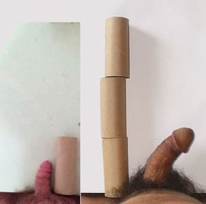

Published:
Publicado:
Aug 8, 2021
NOW WITH ISO 9001 CERTIFICATION AHORA CON CERTIFICACIÓN ISO 9001
I'm professor Christopher Neal and I want to show you a scientific method to increase the size of the cavernosa, enlarge your penis and get huge erections. The results of this method are clear: your penis will be bigger and thicker, your erections will last longer, you'll improve your sex life, providing your partner at least 5 continuous orgasms. Instead of giving promises, I offer you medical and lab results that prove that this product will increase your masculinity and enlarge your erection for up to 30 to 40 more minutes. Soy el profesor Christopher Neal y quiero mostrarte un método científico para aumentar el tamaño de los cavernosos, agrandar tu pene y conseguir grandes erecciones. Los resultados de este método son claros: tu pene será más grande y grueso, tus erecciones durarán más, mejorarás tu vida sexual, proporcionando a tu pareja al menos 5 orgasmos continuos. En lugar de hacer promesas, le ofrezco resultados médicos y de laboratorio que prueban que este producto aumentará su masculinidad y agrandará su erección por hasta 30 a 40 minutos más.
Answer all the questions on the test and you will help with the current research and get a free trial bottle. Questions prepared by Professor Christopher Neal. Conteste todas las preguntas en la prueba y ayudará con la investigación actual y obtendrá una botella de prueba gratuita. Preguntas preparadas por el profesor Christopher Neal.
Question 1 of 6
Cuestión 1 de 6
How many inches do you want to enlarge your penis?
¿Cuántas pulgadas quieres agrandar tu pene?
THANKS FOR ANSWERS
GRACIAS POR LAS RESPUESTAS
Your answers will help in the research of Professor Christopher Neal
Sus respuestas ayudarán en la investigación del profesor Christopher Neal
The priority in the study at the moment was given to the age group of
La prioridad en el estudio en este momento se dio al grupo de edad de
You have reached the target audience
Ha llegado al público objetivo
This age group gets a free trial bottle of Vialophin with a payment of $6.95 for delivery only
Este grupo de edad recibe una botella de prueba gratuita de Vialophin con un pago de $6.95 solo para la entrega
Get your FREE trial bottle
Obtener botella GRATIS
Doesn't matter if it's the first or tenth time you try to end this embarrassing problem: I have the greatest news for you, better than any other thing you've read about other methods to enlarge your penis. No importa si es la primera o la décima vez que intentas acabar con este vergonzoso problema: tengo la mejor noticia para ti, mejor que cualquier otra cosa que hayas leído sobre otros métodos para agrandar tu pene.
If you have tried to enlarge your penis or fix your erectile dysfunction you already know that the weights and pumps are worthless, and everything is as embarrassing as it was before. But know I will help you end this suffering whenever you take off your pants in front of a girl. Si ha intentado agrandar su pene o corregir su disfunción eréctil, ya sabe que las pesas y las bombas son inútiles, y todo es tan vergonzoso como antes. Pero debes saber que te ayudaré a terminar con este sufrimiento cada vez que te quites los pantalones frente a una chica.
On the other hand, if it's your first time trying to enlarge your masculinity or fix ED, then you are going to skip so much embarrassment and rejection from women. Because they will fall in love with your penis and will want it inside of them. Por otro lado, si es la primera vez que intenta agrandar su masculinidad o corregir la disfunción eréctil, entonces evitará tanta vergüenza y rechazo de las mujeres. Porque se enamorarán de tu pene y lo querrán dentro de ellos.
You will also save hundreds of dollars that you would end up wasting for useless products. También ahorrarás cientos de dólares que terminarías desperdiciando en productos inútiles.
I want to show you real photos of Martin, who, with the help of my method, grew his penis up to 3.1 inches and prolonged his sexual relations up to 32 minutes. Quiero mostrarte fotos reales de Martin, quien, con la ayuda de mi método, hizo crecer su pene hasta 3.1 pulgadas y prolongó sus relaciones sexuales hasta 32 minutos.
The documented results of Martin's 4-week treatment: Los resultados documentados del tratamiento de 4 semanas de Martin:
- He grew his penis 3.1 inches without using pumps or weights.
- His penis grew thicker by a 63% and he can have sex at least 5 continuous times.
- He achieved steel hard erections everytime he wanted to have sex.
- Keeps a long-lasting powerful erection, providing his partner amazing orgasms.
- His libido improved as well as his testosterone levels, including more energy and endurance in bed.
- Le creció el pene 3.1 pulgadas sin usar bombas ni pesas.
- Su pene se hizo más grueso en un 63% y puede tener relaciones sexuales al menos 5 veces seguidas..
- Logró erecciones duras como el acero cada vez que quería tener sexo.
- Mantiene una poderosa erección duradera, proporcionando a su pareja orgasmos increíbles.
- Su libido mejoró al igual que sus niveles de testosterona, incluida más energía y resistencia en la cama.
Question 2 of 6
Cuestión 2 de 6
How old are you?
¿Qué edad tiene usted?
THANKS FOR ANSWERS
GRACIAS POR LAS RESPUESTAS
Your answers will help in the research of Professor Christopher Neal
Sus respuestas ayudarán en la investigación del profesor Christopher Neal
The priority in the study at the moment was given to the age group of
La prioridad en el estudio en este momento se dio al grupo de edad de
You have reached the target audience
Ha llegado al público objetivo
This age group gets a free trial bottle of Vialophin with a payment of $6.95 for delivery only
Este grupo de edad recibe una botella de prueba gratuita de Vialophin con un pago de $6.95 solo para la entrega
Get your FREE trial bottle
Obtener botella GRATIS
Martin's results aren't a miracle Los resultados de Martin no son un milagro
They are proved by many different medical tests. They measured the concentrations of testosterone and the quantity and size of the inner tissue of the organism of the volunteers, before and after the treatment. In the end, they repeated the process but included more people. The effectiveness of this method wasn't only proved with the volunteers of these tests, it was proved by real clients too. Their stories are always very emotive. Están comprobados por muchas pruebas médicas diferentes. Midieron las concentraciones de testosterona y la cantidad y tamaño del tejido interno del organismo de los voluntarios, antes y después del tratamiento. Al final, repitieron el proceso pero incluyeron más personas. La eficacia de este método no solo se demostró con los voluntarios de estas pruebas, también lo demostraron clientes reales. Sus historias son siempre muy emotivas.

+2.7″
With Vialophin he became really POWERFUL
There's no flame in bed? After taking this pill, I no longer have space for tiredness when in bed. I'm 38 years old, 7.9 inches and, just rediscovered sex!
After a month of use I realized that they were just 100% confident in their product and after my thirty day course ended I ordered more to get an even better result and I never regret my decision. I've purchased many similar products without getting any results, and these are the only pills that have worked, proved by me and my friends.
William Hurst, 38 years
+2.2″
You must have it!
Vialophin is the best solution to get a powerful penis. If you take them, you'll have energy and will always want to do it. You will have supersex, no women will ever forget you. With my 7.7 inches huge dick, no women will ever say no. Fully recommended!


+2.8″
Can a man be happy with a 4 inch dick???
It was my tragedy. I felt embarrassed while talking with women, I was afraid of them laughing at me during sex
I read about these penis enlargement pills on the bodybuilding forum. I decided to try them just out of curiosity and because they gave a good discount, so I had nothing to lose.
The result: 2.8 extra inches of dick and no more depression. I wasn't simply satisfied with this result I was really happy!!!
All the girls get wet when they see my "pole"
It's great that I ordered a bottle so cheap because it looks like the promotion will end soon
Harvey Carroll, 23 yearsMy wife wants to take me to bed
I'm not gonna lie, I felt terrible when my wife didn't want to do it with me, and when she finally agreed, I could see in her eyes that she was already bored.
I finally took the decision to get these pills, because you don't have to follow a strict diet or any kind of exercise, so almost no one noted great changes in my lifestyle.
Thanks to these pills my penis grew up to 4.3 extra inches and could last longer in bed. My erections were like rock. Now I can make her cum at least 5 times in a row and I can hear her scream with pleasure.
Ethan Conway, 47 years
+3.2″
It works!
My issue wasn't having a small penis because mine already was 5.6 inches long. But, what could I lose by trying? It was amazing how much it grew, up to 8.8 inches. Now, it's a real monster, I believe that even people from Africa don't have it as big as me. It barely fits in my pants, but women like to be relentlessly fucked.
I believe it didn't grow that much because I already had a good length. But still, the results are impressive.


+2.4″
The fastest method to enlarge your penis.
I like having everything in order, that's why every day I checked the results of the treatment. The first few days my penis grew 0.3 inch. A week later it grew an extra inch and in 14 days another 1.1 inches. In total, my penis grew an extra 2.4 inches in 30 days, also, I got 60-minute erections. The results are impressive.
Marcus Bonilla, 32 years

+4″
Goodbye to fake orgasms
Since I was a child, my friends laughed at my small penis in the pool. When I turned 18, I started flirting, but I felt insecure because I thought I was going to be rejected by my 4.8 inch penis. And that's what happened... By a struck of luck, Vialophin , made it grow faster. Before it was 4.8 inch during an erection, now it's 6.5 when flaccid! This really works.
Donald Tatum, 29 years
+3.3″
5 orgasms in 23 minutes
I never thought that for a few dollars I could increase my penis. Oh boy, it grew, and now my
erections last 8 times longer. It's bigger and harder and my girl loves it. This product is amazing.
Now all my sessions end
with a big orgasm scream. It always gets hard and never fails me!


+2.9″
There's no better method to get a bigger dick
Before I started using Vialophin I had many failed attempts, so much that I started feeling awful. A friend of mine recommended me this product. It took a few moments just to recover my ability and self-confidence.
They barely fit in their mouths and I'm always horny and looking for more. I'm no longer afraid of doing it, and I'm not ashamed of my 8 inch dick.
Shawn Elder, 33 years

+2.8″
A real python
I felt ashamed of having a small penis and now I can slap a huge dick on my girl's face. It's amazing! It penetrates her so hard, and it wasn't fully inserted, I can hear her scream. It's music to my ears. That's what I call sex.
I would just like to thank Vialophin for finally showing me what real pleasure feels like!
Chris Williams, 27 years
+2.7″
Con Vialophin se volvió realmente PODEROSO
¿No hay llama en la cama? Después de tomar esta píldora, ya no tengo espacio para el cansancio cuando estoy en la cama. ¡Tengo 38 años, mido 7.9 pulgadas y acabo de redescubrir el sexo!
Al principio, no entendía por qué ofrecían una versión de muestra gratuita de su producto. Pero después de usarlo durante un mes, entendí que simplemente tienen un 100% de confianza en su producto y después de que terminó mi paquete de prueba, pedí más para obtener un resultado aún mejor y nunca me arrepiento de mi decisión. He comprado muchos productos similares sin obtener ningún resultado, y estas son las únicas píldoras que han funcionado, comprobado por mí y mis amigos.
William Hurst, 38 años
+2.2″
Debes tenerlo!
Vialophin es la mejor solución para conseguir un pene potente. Si los toma, tendrá energía y siempre querrá hacerlo. Tendrás supersexualidad, ninguna mujer te olvidará jamás. Con mi enorme polla de 7.7 pulgadas, ninguna mujer dirá que no. ¡Totalmente recomendado!
+2.8″
¿Puede un hombre ser feliz con una polla de 4 pulgadas?
Fue mi tragedia. Me sentí avergonzado al hablar con mujeres, tenía miedo de que se rieran de mí durante el sexo.
El resultado: 2.8 pulgadas extra de pene y no más depresión. No estaba simplemente satisfecho con este resultado, ¡estaba realmente feliz!
Todas las chicas se mojan cuando ven mi "polo"
Harvey Carroll, 23 añosMi esposa quiere llevarme a la cama
No voy a mentir, me sentí fatal cuando mi esposa no quiso hacerlo conmigo, y cuando finalmente accedió, pude ver en sus ojos que ya estaba aburrida.
Finalmente tomé la decisión de tomar estas pastillas, porque no hay que seguir una dieta estricta ni ningún tipo de ejercicio, por lo que casi nadie notó grandes cambios en mi estilo de vida.
Gracias a estas pastillas, mi pene creció hasta 4.3 pulgadas más y podía durar más en la cama. Mis erecciones eran como una roca. Ahora puedo hacer que se corra al menos 5 veces seguidas y puedo escucharla gritar de placer.
Ethan Conway, 47 años
+3.2″
¡Funciona!
Mi problema no era tener un pene pequeño porque el mío ya tenía 5.6 pulgadas de largo. Pero, ¿qué podría perder al intentarlo? Fue asombroso cuánto creció, hasta 8.8 pulgadas. Ahora, es un verdadero monstruo, creo que incluso la gente de África no lo tiene tan grande como yo. Apenas cabe en mis pantalones, pero a las mujeres les gusta que las follen sin descanso.
Creo que no creció tanto porque ya tenía una buena longitud. Pero aún así, los resultados son impresionantes.
+2.4″
El método más rápido para agrandar su pene.
Me gusta tener todo en orden, por eso todos los días revisaba los resultados del tratamiento. Los primeros días mi pene creció 0.3 pulgadas. Una semana más tarde creció una pulgada extra y en 14 días otras 1.1 pulgadas. En total, mi pene creció 2.4 pulgadas extra en 30 días, además, obtuve erecciones de 60 minutos. Los resultados son impresionantes.
Marcus Bonilla, 32 añosAdiós a los orgasmos falsos
Desde que era niño, mis amigos se reían de mi pequeño pene en la piscina. Cuando cumplí 18, comencé a coquetear, pero me sentí inseguro porque pensé que mi pene de 4.8 pulgadas me iba a rechazar. Y eso es lo que sucedió ... Por un golpe de suerte, Vialophin lo hizo crecer más rápido. Antes medía 4.8 pulgadas durante una erección, ¡ahora es 6.5 cuando está flácido! Esto realmente funciona.
Donald Tatum, 29 años
+3.3″
5 orgasmos en 23 minutos
Nunca pensé que por unos pocos dólares podría aumentar mi pene. Oh, vaya, creció y ahora
mis erecciones duran 8 veces más. Es más grande y más difícil y a mi chica le encanta. Este producto
es asombroso. Ahora todas mis sesiones terminan con un gran grito de orgasmo. ¡Siempre se pone
difícil y nunca me falla!
+2.9″
No hay mejor método para conseguir una polla más grande
Antes de comenzar a usar Vialophin tuve muchos intentos fallidos, tanto que comencé a sentirme fatal. Un amigo me recomendó este producto. Me tomó unos momentos recuperar mi capacidad y la confianza en mí mismo.
Apenas caben en sus bocas y siempre estoy cachonda y buscando más. Ya no tengo miedo de hacerlo, y no me avergüenzo de mi pene de 8 pulgadas.
Shawn Elder, 33 años
+2.8″
Una pitón real
Tenía miedo de que la gente se riera de mí, así que pedí la versión de prueba de Vialophin. Me sentí avergonzado de tener un pene pequeño y ahora puedo abofetear una polla enorme en la cara de mi chica. ¡Es asombroso! La penetra tan fuerte, y no estaba completamente insertada, puedo escucharla gritar. Es música para mis oídos. Eso es lo que yo llamo sexo.
¡Solo me gustaría agradecer a Vialophin por finalmente mostrarme cómo se siente el verdadero placer!
Chris Williams, 27 años
Try Before You Buy
Because it is a scientific method, Professor Neal is concerned with results, not promises.
This is Professor Neal's personal guarantee, backed up by the manufacturer of the product - so you have nothing to risk!
But there is a condition: when you get these results, tell your friends about it so that they also know about Vialophin !
Pruebe antes de comprar
Debido a que es un método científico, al profesor Harford le preocupan los resultados, no las promesas.
Esta es la garantía personal del profesor Harford, respaldada por el fabricante del producto, ¡así que no tiene nada que arriesgar!
Pero hay una condición: cuando obtenga estos resultados, dígaselo a sus amigos para que ellos también sepan sobre Vialophin.
HOW TO INCREASE YOUR PENIS AN EXTRA 2.5 INCHES AND LAST LONGER, USING A SCIENTIFIC METHOD? ¿CÓMO AUMENTAR SU PENE 2,5 PULGADAS ADICIONALES Y DURAR MÁS USANDO UN MÉTODO CIENTÍFICO?
You won't even remember when you had a 4 inch penis and even when you felt ashamed when your partner saw it. This is what you have to do to make your penis increase and to give her 5 orgasms in a row. Ni siquiera recordará cuando tenía un pene de 4 pulgadas e incluso cuando se sintió avergonzado cuando su pareja lo vio. Esto es lo que tienes que hacer para hacer que tu pene aumente y darle 5 orgasmos seguidos.
it's easy, you just need to take a pill a day before sex, and to get better results, take one every day. One during breakfast and another during dinner time. After doing that, continue your life as usual, but, you will start feeling your organism functioning in a very different way. You won't have to change your diet, no more pumps or special exercises; your organism will make your cavernosa grow in size. es fácil, solo necesita tomar una pastilla un día antes de tener relaciones sexuales, y para obtener mejores resultados, tome una todos los días. Uno durante el desayuno y otro durante la cena. Después de hacer eso, continúe su vida como de costumbre, pero comenzará a sentir que su organismo funciona de una manera muy diferente. No tendrá que cambiar su dieta, no más bombas ni ejercicios especiales; tu organismo hará que tus cavernosas crezcan en tamaño.
Question 3 of 6
Cuestión 3 de 6
Do you want your wife to experience orgasm every time?
¿Quieres que tu esposa experimente el orgasmo cada vez?
THANKS FOR ANSWERS
GRACIAS POR LAS RESPUESTAS
Your answers will help in the research of Professor Christopher Neal
Sus respuestas ayudarán en la investigación del profesor Christopher Neal
The priority in the study at the moment was given to the age group of
La prioridad en el estudio en este momento se dio al grupo de edad de
You have reached the target audience
Ha llegado al público objetivo
This age group gets a free trial bottle of Vialophin with a payment of $6.95 for delivery only
Este grupo de edad recibe una botella de prueba gratuita de Vialophin con un pago de $6.95 solo para la entrega
Get your FREE trial bottle
Obtener botella GRATIS
This process isn't a miracle, it's simply a scientific method working to improve masculinity. The special, scientific blend of herbs will increase your penis size and make it hard for up to 2 hours. Vialophin also increases your testosterone, thickens your veins, improves blood flow and libido. Este proceso no es un milagro, es simplemente un método científico que trabaja para mejorar la masculinidad. La mezcla científica y especial de hierbas aumentará el tamaño de su pene y lo endurecerá hasta por 2 horas. Vialophin también aumenta su testosterona, espesa sus venas, mejora el flujo sanguíneo y la libido.
- Your penis will grow at least an extra 1.6 inches in 7 days. Instead of feeling insecure in bed, you'll feel horny, full of passion and desire, and ready to do anything.
- Say goodbye to your flaccid erections! It's going to be so hard and ready to satisfy any kind of sexual desire, ALWAYS and ANYWHERE.
- All your sessions will end with big orgasms. The looks of deception will be over and also the dreadful "That's it?". She will have several minutes of pleasure and will need even more time to fully recover...
- Su pene crecerá al menos 1.6 pulgadas adicionales en 7 días. En lugar de sentirte inseguro en la cama, te sentirás cachondo, lleno de pasión y deseo, y listo para hacer cualquier cosa.
- ¡Dile adiós a tus erecciones flácidas! Va a ser tan difícil y listo para satisfacer cualquier tipo de deseo sexual, SIEMPRE y EN CUALQUIER LUGAR.
- Todas tus sesiones terminarán con grandes orgasmos. Se acabarán las miradas de engaño y también el espantoso "¿Eso es todo?". Tendrá varios minutos de placer y necesitará aún más tiempo para recuperarse por completo ...
The effects of the treatment with the Vialophin pills were measured using statistic tests. The results are represented by percentages. Los efectos del tratamiento con las píldoras Vialophin se midieron mediante pruebas estadísticas. Los resultados están representados por porcentajes.

Erection time
Improvement
+93%
Orgasms your partner has
Number improvement
+89%
Levels of testosterone
Improvement
+69%
Penis length
Enlargement
+84%
Penis Thickness
Thickening
+65%
Time for sexual relations
Improved
+57%
min
Statistic Norm
max
Tiempo de erección
Mejora
+93%
Orgasmos que tiene tu pareja
Mejora del número
+89%
Niveles de testosterona
Mejora
+69%
Longitud del pene
Ampliación
+84%
Espesor del Pene
Engrosamiento
+65%
Tiempo para las relaciones sexuales
Mejorar
+57%
mínimo
Norma Estadística
máximo
The most important reason why you should order Vialophin right now La razón más importante por la que debe pedir Vialophin ahora mismo
Now, you will believe that you just found the solution for your embarrassment and insecurity in bed due to your small penis. I know, because I also felt that when I tried my method years ago. But I ask, don't order Vialophin just yet.
Ahora, creerás que acabas de encontrar la solución para tu vergüenza e inseguridad en la cama debido a tu pene pequeño. Lo sé, porque también lo sentí cuando probé mi método hace años. Pero les pido que no pidan Vialophin todavía.
I ask you this because I want you to see the powerful results that can be obtained with these pills.
Te pregunto esto porque quiero que veas los poderosos resultados que se pueden obtener con estas pastillas.
You need to understand that the secret of the effectiveness of the Vialophin is in its special mix of four ingredients that help enlarge the penis. Unlike other products that usually have at max two ingredients, Vialophin mixed the power of four substances that help thicken the cavernosa and each one of them helps in the enlargement process in their own distinctive ways.
Debe comprender que el secreto de la efectividad del Vialophin está en su mezcla especial de cuatro ingredientes que ayudan a agrandar el pene. A diferencia de otros productos que generalmente tienen un máximo de dos ingredientes, Vialophin mezcló el poder de cuatro sustancias que ayudan a espesar la cavernosa y cada una de ellas ayuda en el proceso de agrandamiento en sus propias formas distintivas.
Question 4 of 6
Cuestión 4 de 6
Do you want your sex to last longer than 20 minutes?
¿Quieres que tu sexo dure más de 20 minutos?
THANKS FOR ANSWERS
GRACIAS POR LAS RESPUESTAS
Your answers will help in the research of Professor Christopher Neal
Sus respuestas ayudarán en la investigación del profesor Christopher Neal
The priority in the study at the moment was given to the age group of
La prioridad en el estudio en este momento se dio al grupo de edad de
You have reached the target audience
Ha llegado al público objetivo
This age group gets a free trial bottle of Vialophin with a payment of $6.95 for delivery only
Este grupo de edad recibe una botella de prueba gratuita de Vialophin con un pago de $6.95 solo para la entrega
Get your FREE trial bottle
Obtener botella GRATIS
#1 Ingredient - Guarana
Is the most important and required substance to quickly thicken the veins and enlarge the penis. This
natural ingredient turns the thin veins in wide highways to get more blood flowing to your penis. The
cavernosa are
stimulated and reinforced. If frequently consumed, you can increase your penis up to a 73.4 %.
#2 Ingredient - Peppermint extract
It's used as an essential oil in Vialophin because its properties are unique. Contains great amounts of
oxygen particles that help improve the transportation of nutrients to the cavernosa. Also, it helps to
dilute the blood,
so it will make your testosterone filled penis to grow even more. Thanks to these substances you will
have a greater desire to have sex, and your sperm will have a better taste - all your partners will feel
the difference.
#3 Ingredient - Arctium extract - The plant known as the African viagra. The Arctium extract increases the sensibility of your penis to stimuli. So it's guaranteed to give you an instant and strong erection that will last for up to 30 - 40 min and will help you last longer in bed.
#4 Ingredient - Ginseng extract - the root that increases libido
They have been used for centuries in traditional medicine in China and India. Has many properties, among
them, it increases the vital energy, but above everything else, it increases the libido and improves
your erections,
making them last longer. Also, it helps improve the blood flow to your penis, giving your better and
faster erections, your penis won't go flaccid in the time of need. You'll make your partner have
multiple orgasms and you
won't have any problems.
#1 Ingrediente - Guaraná
Es la sustancia más importante y necesaria para engrosar rápidamente las venas y agrandar el pene. Este
ingrediente natural convierte las venas delgadas en carreteras anchas para que fluya más sangre a su
pene. Los cavernosos se estimulan y refuerzan. Si se consume con frecuencia, puede aumentar su pene
hasta un 73,4%.
#2 Ingrediente - Extracto de menta
Se utiliza como aceite esencial en Vialophin
porque sus propiedades son únicas. Contiene grandes cantidades de partículas de oxígeno que ayudan a
mejorar el transporte de nutrientes a los cavernosos. Además, ayuda a diluir la sangre, por lo que hará
que su pene lleno de testosterona crezca aún más. Gracias a estas sustancias tendrás un mayor deseo de
tener relaciones sexuales, y tu esperma tendrá un mejor sabor, todas tus parejas sentirán la diferencia.
#3 Ingrediente - Extracto de Arctium: la planta conocida como viagra africana
El
extracto de Arctium aumenta la sensibilidad de su pene a los estímulos. Por lo tanto, está garantizado
que le brindará una erección instantánea y fuerte que durará entre 30 y 40 minutos y lo ayudará a durar
más en la cama.
#4 Ingrediente - Extracto de ginseng: la raíz que aumenta la libido
Se han utilizado
durante siglos en la medicina tradicional en China e India. Tiene muchas propiedades, entre ellas,
aumenta la energía vital, pero sobre todo, aumenta la libido y mejora tus erecciones, haciéndolas durar
más. Además, ayuda a mejorar el flujo de sangre a su pene, brindando erecciones mejores y más rápidas,
su pene no se volverá flácido en el momento de necesidad. Harás que tu pareja tenga múltiples orgasmos y
no tendrás ningún problema.
Question 5 of 6
Cuestión 5 de 6
Do you want your wife to lick your penis every morning?
¿Quieres que tu esposa te lame el pene todas las mañanas?
THANKS FOR ANSWERS
GRACIAS POR LAS RESPUESTAS
Your answers will help in the research of Professor Christopher Neal
Sus respuestas ayudarán en la investigación del profesor Christopher Neal
The priority in the study at the moment was given to the age group of
La prioridad en el estudio en este momento se dio al grupo de edad de
You have reached the target audience
Ha llegado al público objetivo
This age group gets a free trial bottle of Vialophin with a payment of $6.95 for delivery only
Este grupo de edad recibe una botella de prueba gratuita de Vialophin con un pago de $6.95 solo para la entrega
Get your FREE trial bottle
Obtener botella GRATIS
Meet the only person who can free you from these embarrassing sexual issues.
The tests confirm it, that the first effects appear just in a few instants, in less time than it took you to read this text. But I'm 100% sure that your penis won't grow if you don't start RIGHT NOW. This is the moment when you have to take the most important choice: do you decide this is too good to be true, or take the choice of taking action and gaining a pleasurable sexual life, don't forget it comes with an extra 2.5 inches of length.
It doesn't matter if you believe or not if this is a scientific solution for your issues...
It doesn't matter that you have tried other products before...
It doesn't matter if you still believe or not that your partner has faked her orgasms...
Vialophin is the most secure, affordable and proved solution in existence to enlarge your penis.
But in the end, it's you who must take the choice.
Want to join thousands of men who can show off their 8 inch penis?
I've said it all about this method. You know how it works and how effective it can be, as said by real consumers. But I know it's quite difficult to take the first step to enlarge your penis and improve your sex life. That's why I want to do something more for you. I'm offering my personal assistance. I want to remove any kind of risks when trying the effectiveness of Vialophin . Simply put, I'll take care of all of it and I propose the following:
Conoce a la única persona que puede liberarte de estos problemas sexuales embarazosos.
Las pruebas lo confirman, que los primeros efectos aparecen en pocos instantes, en menos tiempo del que tardó en leer este texto. Pero estoy 100% seguro de que su pene no crecerá si no comienza AHORA MISMO. Este es el momento en el que debe tomar la decisión más importante: ¿decide que esto es demasiado bueno para ser verdad, o toma la decisión de tomar medidas y obtener una vida sexual placentera? No olvide que viene con 2.5 pulgadas adicionales. de longitud.
No importa si cree o no si esta es una solución científica para sus problemas ...
No importa que hayas probado otros productos antes ...
No importa si todavía crees o no que tu pareja ha fingido sus orgasmos ...
Vialophin es la solución más segura, asequible y probada que existe para agrandar su pene.
Pero al final, eres tú quien debe tomar la decisión.
¿Quiere unirse a miles de hombres que pueden lucir su pene de 8 pulgadas?
Lo he dicho todo sobre este método. Sabes cómo funciona y cuán efectivo puede ser, como dicen los consumidores reales. Pero sé que es bastante difícil dar el primer paso para agrandar tu pene y mejorar tu vida sexual. Por eso quiero hacer algo más por ti. Ofrezco mi asistencia personal. Quiero eliminar cualquier tipo de riesgo al probar la eficacia de Vialophin. En pocas palabras, me ocuparé de todo y propongo lo siguiente:
Question 6 of 6
Cuestión 6 de 6
Do you want to have sex every night with incredible pleasure?
¿Quieres tener sexo todas las noches con un placer increíble?
THANKS FOR ANSWERS
GRACIAS POR LAS RESPUESTAS
Your answers will help in the research of Professor Christopher Neal
Sus respuestas ayudarán en la investigación del profesor Christopher Neal
The priority in the study at the moment was given to the age group of
La prioridad en el estudio en este momento se dio al grupo de edad de
You have reached the target audience
Ha llegado al público objetivo
This age group gets a free trial bottle of Vialophin with a payment of $6.95 for delivery only
Este grupo de edad recibe una botella de prueba gratuita de Vialophin con un pago de $6.95 solo para la entrega
Get your FREE trial bottle
Obtener botella GRATIS
Try Vialophin at my own risk!
I'm a scientist, that's why I know how much men are affected by embarrassment and self-worth issues in their daily lives. Unfortunately, I can't make your penis grow by itself, nor give multiple orgasms to your partner in your name. What I can do is, help you take the best choice. That's why I'm giving you this simple offer, no tricks.
In 7 days your dick will grow at least 1.6 inches and you'll be able to give up to 5 orgasms to your girl.

Is the simplest offer that exists; you pay only for results, not for promises. To take this offer, just fill the order form.
What you need to know:
100% discretion guaranteed. The orders are packaged in a grey cardboard box, with no logos or any kind of seal or inscriptions that reveal the content of the package. The adhesive tape used is brown colored, also, without any description.
In the case Vialophin doesn't work for you, I recommend going to the doctor to check if there's something wrong with your penis. If you have no serious issues with the structure of the cavernosa, then there's nothing that could stop you from getting this incredible results. Absolutely nothing!
Can there be a safer choice? Just remember, the quantity of the product is limited. This offer is unique and won't ever be repeated, that's why you need to TAKE ACTION!
¡Pruebe Vialophin bajo mi propia responsabilidad!
Soy un científico, por eso sé cuánto a los hombres les afectan la vergüenza y los problemas de autoestima en su vida diaria. Desafortunadamente, no puedo hacer que su pene crezca solo, ni darle orgasmos múltiples a su pareja en su nombre. Lo que puedo hacer es ayudarlo a tomar la mejor decisión. Por eso te doy esta simple oferta, sin trucos.
Es la oferta más sencilla que existe; pagas solo por los resultados, no por las promesas. Para aceptar esta oferta, simplemente complete el formulario de pedido.
Lo que necesitas saber:
100% discreción garantizada. Los pedidos se empaquetan en una caja de cartón gris, sin logotipos ni ningún tipo de precinto o inscripciones que revelen el contenido del paquete. La cinta adhesiva utilizada es de color marrón, también, sin descripción alguna.
En el caso de que Vialophin no funcione para usted, le recomiendo que vaya al médico para verificar si hay algún problema con su pene. Si no tiene problemas serios con la estructura de la cavernosa, entonces no hay nada que pueda evitar que obtenga estos increíbles resultados. ¡Absolutamente nada!
¿Puede haber una opción más segura? Solo recuerde, la cantidad de producto es limitada. Esta oferta es única y no se repetirá nunca, ¡es por eso que debes TOMAR ACCIÓN!
Due to security reasons and to provide the best customer service, the owner of this web site reserves the
right to do any changes to the privacy policies. This is done to keep safe the client's identity, so to
protect them, we
changed the names and last names of the people mentioned here. Also, the site's owner declares that any
resemblance to real people is by pure coincidence and wasn't done on purpose.
Por razones de seguridad y para brindar el mejor servicio al cliente, el propietario de este sitio web se
reserva el derecho de realizar cambios en las políticas de privacidad. Esto se hace para mantener segura la
identidad del cliente, por lo que para protegerlo, cambiamos los nombres y apellidos de las personas
mencionadas aquí. Además, el propietario del sitio declara que cualquier parecido con personas reales es por
pura coincidencia y no se hizo a propósito.